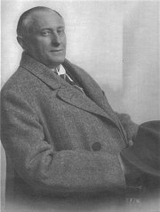
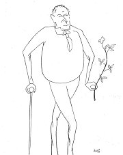
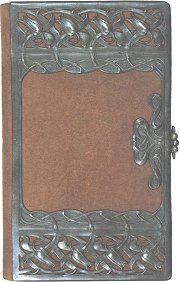
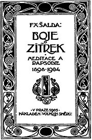
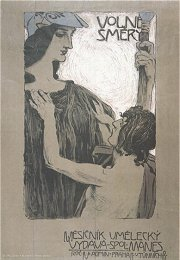
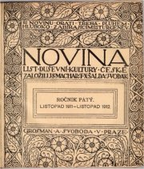
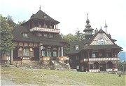
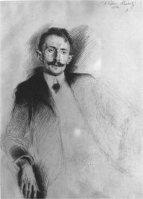

Historie ukázala, �e pøesto�e byl Šaldùv úsudek velmi dobrı, ne v�dy byl zcela objektivní. Nìkteré spøátelené autory neúmìrnì protì�oval (Rù�ena Svobodová), na jiné si vylo�enì zasedl (J.Karásek, K.Hlaváèek, F.Šrámek, V.Mrštík, K.Èapek). Naštìstí se dokázali prosadit i pøes pøeká�ky, které jim kladl. Šaldùv vliv byl tak silnı, �e nìkteøí spisovatelé pøestali po jeho zdrcující kritice zcela psát! Jindy byl zase usvìdèen z povrchnosti – o sbírce povídek psal jako o sbírce básní, tak�e ji zøejmì neèetl a znal ji pouze z doslechu...
Vysvìtli pøesnı vıznam slov kritika, sebekritika, literární kritika, kritizování a kritérium.

Adolf Hoffmeister: Estét
|
FRANTIŠEK XAVER ŠALDA
* 22. 12. 1867 (Liberec)
† 4. 4. 1937 (Praha)
František Xaver Šalda byl nejvıznamnìjším èeskım literárním kritikem. Po maturitì na Akademickém gymnáziu v Praze zaèal studovat práva, ale fakultu nedokonèil. �ivil se jako novináø, psal literární hesla do Ottova slovníku nauèného a pùsobil na Univerzitì Karlovì jako soukromı docent pro dìjiny moderních západoevropskıch literatur.
Pùvodnì mìl Šalda spisovatelské ambice, ale jeho povídka Analıza se setkala se zdrcujícím odmítnutím. Pokusil se tedy svùj zámìr vysvìtlit teoreticky ve stati Syntetism v novém umìní (1892). Její ohlas u� byl mnohem pozitivnìjší, a proto se Šalda vydal na dráhu kritika. Umìlecké tvorbì se však vìnoval dál. Jeho prózy (�ivot ironickı a jiné povídky, Loutky i dìlníci bo�í) èi divadelní hry (Dítì, Zástupové) byly celkem úspìšné, ale zcela je zastínila tvorba esejistická a kritická.
Šalda chtìl, aby literární kritika nebyla pouhım teoretizováním, ale aby se vyrovnala svou kvalitou umìleckım dílùm. Nepova�oval kritiku za souèást literární vìdy, ale umìní.
Šaldùv vıznam na poli kritiky spoèívá pøedevším v soustavnosti. Pilnì èetl nové knihy a sna�il se o ka�dé referovat, a� u� se mu líbila nebo ne. Dovedl také pøekonat generaèní kritéria a oceòoval nejen tvorbu autorù z okruhu Èeské moderny, ale také pøedstavitele meziváleèné avantgardy (O nejmladší poezii èeské). Ve svıch hlubokıch analızách se vracel i do minulosti (Génius Shakespearùv a jeho tvorba, Básnická osobnost Dantova). Jako jeden z prvních teoretikù ocenil pøínos Karla Hynka Máchy a poznal jeho velikost (do té doby byl Mácha vnímán vìdci hlavnì jako byronista, tj. napodobitel Byrona). Svımi èlánky i pøeklady zprostøedkoval Èechùm vıboje prokletıch básníkù (J.A.Rimbaud, bo�skı roš�ák) a dalších moderních umìlcù. Šaldovy kritiky vyšly v souborech Juvenilie a Mladé zápasy.
Šalda byl spolu s Macharem hlavním autorem manifestu Èeská moderna (1895). K jeho nejvıznamnìjším knihám patøí Boje o zítøek a Duše a dílo, ze samostatnıch esejí potom O tak zvané nesmrtelnosti díla básnického nebo Mácha snivec i buøiè.
|
Literární kritika
Literární kritika je dnes vedle literární teorie a literární historie pova�ována za základní disciplínu literární vìdy. Poèátky literární kritiky jsou spjaty se vznikem èasopisù, které zaèaly v recenzích referovat o kulturním dìní a v kritikách hodnotit kvalitu umìleckıch dìl. Prubíøskım kamenem èeské literární kritiky byly posudky na Máchùv Máj. Jeden z jeho kritikù Josef Krasoslav Chmelenskı (1800-1839) je pova�ován za prvního opravdového kritika u nás. Divadelní kritice se vìnoval Jan Neruda. Literární kritiku pozdvihl Karel Havlíèek Borovskı, kterı rozcupoval Tylovu novelu Poslední Èech.

Secesní kni�ní vazba od Emanuela Nováka
Jak se Šalda dívá na roli kritika a vıznam kritiky?
Souhlasíš s jeho argumenty?
Nemìl pøehnané ambice?
Podaøilo se mu vlastní koncepci literární kritiky realizovat?
Které další èeské kritiky znáš?
Myslíš si, �e je práce kritika dùle�itá i dnes? Proè?
|
F.X.Šalda: Boje o zítøek
Obsah: Experimenty, Spisovatel, umìlec, básník, Osobnost a dílo, Hrdinnı zrak, Alej snu a meditace ku hrobu Jana Nerudy, �ena v poesii a literatuøe, Geniova mateøština, Auguste Rodin, Nová krása: její genese a charakter, Ethika dnešní obrody aplikovaného umìní, Problém národnosti v umìní, Umìleckı paradox, Tvùrèí èiny, Násilník snu, Kritika pathosem a inspirací, Le�ela zemì pøede mnou, vdova po duchu
F.X.Šalda: Duše a dílo
Obsah: Jean Jacques Rousseau, básník a myslitel. Prolog k romantismu, Karel Hynek Mácha a jeho dìdictví, Bo�ena Nìmcová, Svatopluk Èech, Nìkolik poznámek o Jaroslavu Vrchlickém, Románové dílo Terézy Novákové, Vilém Mrštík, Antonín Sova, sensitiv a visionáø, Vıvoj a integrace v poesii Otokara Bøeziny, Dvì stati o díle Rù�eny Svobodové, Hana Kvapilová, Henrik Ibsen, Émile Zola, Joris Karl Huysmans, Mladı Flaubert. Epilog romantismu
|
F.X.Šalda: Boje o zítøek
V knize esejí Boje o zítøek (1905) se Šalda zabıvá obecnımi otázkami umìlecké tvorby a impulzy, které znamenaly zásadní promìnu literatury i vıtvarného umìní. Obšírnì zde rovnì� vysvìtluje své pojetí literární kritiky. Obdivnì se vyjadøuje zvláštì o Rodinovi a Nerudovi.
F.X.Šalda: Duše a dílo
Ústøedním tématem knihy esejí Duše a dílo (1913) je romantismus a jeho rozmanité projevy. Šalda ovšem neuznává jeho úzké historické vymezení a všímá si romantickıch rysù v tvorbì nejrùznìjších autorù. Na rozdíl od jeho pøedchozí knihy jde vıhradnì o sbírku literárních medailonù vìnovanıch jednotlivım osobnostem èeské i svìtové kultury. Šalda se velmi kriticky dívá na dílo jinak uznávanıch autorù jako byli Èech nebo Mrštík.
|
Porovnej Šaldovy eseje s Bøezinovımi.
Dozvìdìl/a ses z ukázky nìco nového o Nerudovi? Co?
Ovlivnil tento text tvùj názor na Nerudu a jeho tvorbu?
Šalda se pozdìji k tématu vrátil. Srovnej jeho sta� Neruda ponìkud nekonvenèní s Alejí snu a meditace ku hrobu Jana Nerudy. Jak se Šaldovy názory bìhem 30 let promìnily?

Co víš o autorech, kterım se Šalda vìnuje ve své knize?
Vyber si jednoho z nich a zpracuj jeho medailon.
Srovnej svùj medailon s názory F.X.Šaldy.
Zmìnily Šaldovy argumenty tvùj pohled na daného spisovatele?
Jak se Šalda dívá na tvorbu Viléma Mrštíka?
Souhlasíš s ním? Proè?
Doká�eš vyvrátit Šaldovy argumenty?
|
Šaldovy èasopisy
Šalda spolupracoval s øadou vıznamnıch èasopisù (Literární listy, Rozhledy). Sám redigoval Volné smìry (1902-1907), Novinu (1908-1912), Èeskou kulturu (1912-1914), Kmen (1917-1919) a Kritiku (1924-1925). Vydával èasopis Tvorba (1925-1928), kterı po zákazu komunistického tisku pøedal Juliu Fuèíkovi, a Šaldùv zápisník (1928-1937).

Èasopis Volné smìry
Které kulturní èasopisy znáš? Èteš je? Proè?
Jak se liší od komerèních spoleèenskıch èasopisù?
|
Šaldùv zápisník
Èasopisem Šaldùv zápisník (1928-1937) si všeobecnì uznávanı kritik splnil svùj sen. A� do konce �ivota ho plnil pouze vlastními pøíspìvky – esejemi, kritikami, polemikami, ale i literárními díly. Šlo o unikátní poèin, kterı mìl u nás obdobu pouze v Demlovıch Šlépìjích.
F.X.Šalda o Dykovi
Šaldovy vysoké nároky na umìlce a jejich tvorbu ukazuje kritika Dykovy dramatizace proslulého Cervantesova románu Zmoudøení dona Quijota.
|

Obálka èasopisu Novina
Vysvìtli Šaldùv pojem „vìrojatnost“. Co si o nìm myslíš?
Mohou bıt literární kritiky pozitivní?
Jakı je rozdíl mezi kritizováním a psaním kritik?
Píší se kritiky pouze na literární díla, nebo se zamìøují i na jiné oblasti? Na které?
Kde se mù�eme setkat s kritikami?
Co je impresionistická kritika?
Jakı je rozdíl mezi recenzí, kritikou a reklamou?
Co se Šaldovi nelíbilo na Dykovì divadelní høe?
Souhlasíš s jeho názory? Proè?
Co nového ses dozvìdìl/a z Šaldovy kritiky?
|
Internetové stránky
Šalda, pøehled dìl
Šaldovy èlánky, vıbìr
Šalda: O tak zvané nesmrtelnosti díla básnického
Spoleènost F.X.Šaldy
Tipy
Šaldùv zápisník vyšel znovu v 90. letech 20. století
Èeská literatura na Internetu, recenze

Jurkovièovy Pustevny v Ro�novì pod Radhoštìm propojují secesní architektonické prvky s lidovımi.
|
Doporuèená èetba
Buriánek, František: Kritik F.X.Šalda, Èeskoslovenskı spisovatel, Praha 1987
Èítanka èeského myšlení o literatuøe, Èeskoslovenskı spisovatel, Praha 1976
Èteme z F.X.Šaldy, SPN, Praha 1981
Experimenty, Èeskı literární esej z pøelomu 19. a 20. století, Melantrich, Praha 1985
F.X.Šalda 1867 1937 1967, Academia, Praha 1968
Lantová, Ludmila: Hledání hodnot, O literární kritice devadesátıch let, Praha 1969
Máchal, Jan: Boje o nové smìry v èeské literatuøe (1880-1900), Praha 1926
Mokrejš, Antonín: Duchovní svìt F.X.Šaldy, Torst, Praha 1997
Mourková, Jarmila: Rù�ena Svobodová, Melantrich, Praha 1975
Soubor díla F.X.Šaldy (29 svazkù), Torst
Svoboda, Ludvík: F.X.Šalda, Melantrich, Praha 1967
Šalda, František Xaver: Básnì, Praha 1997
Šalda, F.X.: Boje o zítøek, Duše a dílo, Melantrich, Praha 1973
Šalda, F.X.: Èeské medailony, SNKLHU, Praha 1959
Šalda, F.X.: Kritické projevy (13 svazkù)
Šalda, F.X.: O pøedpokladech a povaze tvorby, Èeskoslovenskı spisovatel, Praha 1978
Šalda, F.X: Z období zápisníku (2 svazky), Odeon, Praha 1988
Šaldùv slovník nauènı, Praha 1986 (hesla pro Ottùv slovník nauènı)
Volné smìry, Èasopis secese a moderny, Torst, Praha 1993
|
Vypracuj písemnı referát o nìkteré z uvedenıch knih.
Napiš literární kritiku.
Kterımi kvalitativními kritérii budeš umìlecké dílo mìøit?

Max Švabinskı: F.X.Šalda
|
|